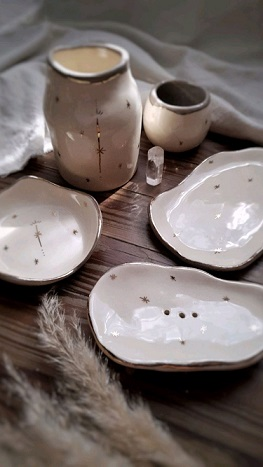

Mis primeros pasos en la cerámica

Un espacio donde la creación de tu producto propio en cerámica, genera armonía y felicidad.
Creamos un espacio para que puedas explotar la creatividad a través de nuestra pasión que es la cerámica
En este curso aprenderás desde cero a modelar y esmaltar la cerámica, creando piezas con barro sin cocción y, también, otras de barro con cocción. Para ello, conocerás en profundidad la diferencia entre el barro con horno y el de secado al aire, además de cómo hacer moldes de yeso que te servirán como base para infinidad de piezas que podrás crear por tu cuenta.
Aquí podrás realizar 4 macetas o bowls pequeños cada uno con un acabo distintivo y una técnica de terminación diferente.
En 2 clases, de 3 hs cada una, podrás tener un primer acercamiento con todos los procesos de la cerámica.
PROXIMO ENCUENTO 23 Y 30 DE JUNIO